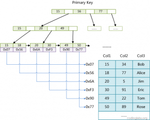
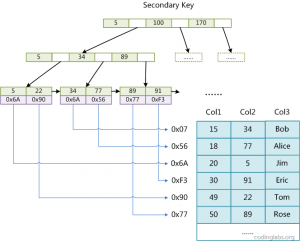
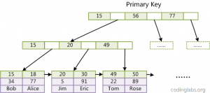
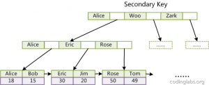

在使用mysql索引的时候,会很好奇为什么一般都使用B+树作为索引，而不使用哈希表。非主键字段是怎么创建索引的,其索引内容是什么,怎么和对应行关联？为什么必须存在主键,为什么主键最好是自增的？
带着这些问题,我们先了解一下B+树是什么,以及mysql的最左前缀原理。
B-tree和B+tree
b树和B+树主要用于数据库索引的原因之一是因为数据库数据是存放在磁盘上的,虽然理论上二叉树的查找和比较次数都是最优的,但对于需要访问磁盘IO这种慢操作就不太适用了,使用B树可以使计算机在IO操作的时候基于局部原理和磁盘预读的页读取更少。进而使IO操作更少,每次都恰好读取到B树的一个节点数据。
B-tree的特点
一个M阶的b树具有如下几个特征(M阶为每个节点最多包含M个孩子)：定义任意非叶子结点最多只有M个儿子，且M>2；
- 根结点的儿子数为[2, M]；
- 除根结点以外的非叶子结点的儿子数为[M/2, M]，向上取整；
- 非叶子结点的关键字个数=儿子数-1；
- 所有叶子结点位于同一层；
- k个关键字把节点拆成k+1段，分别指向k+1个儿子，同时满足查找树的大小关系。
如图为一个M=4的B树

依次插入6 10 4 14 5 11 15 3 2 12 1 7 8 8 6 3 6 21 5 15 15 6 32 23 45 65 7 8 6 5 4B树的演示图片

B+tree的特点
b+tree是b-tree的一种变形,在B树的基础上有如下新特点
- 有k个子结点的结点必然有k个关键码；
- 非叶结点仅具有索引作用，跟记录有关的信息均存放在叶结点中。
- 树的所有叶结点构成一个有序链表，可以按照关键码排序的次序遍历全部记录。
如图为一个M=4的B+树

B+树的插入演示

相较于B树,B+树的非叶子结点只包含导航信息,不包含实际的值,所有的叶子结点和相连的节点使用链表相连，便于区间查找和遍历。但B树的每一个节点都包含key和value，因此经常访问的元素可能离根节点更近，因此访问也更迅速。
MyISAM的索引和InnoDB索引
一 、MyISAM的索引
MyISAM的索引方式是“非聚集”索引。MyISAM索引文件和数据文件是分离的，索引文件仅保存数据记录的地址。MyISAM引擎使用B+Tree作为索引结构，叶节点的data域存放的是*数据记录的地址*。
1. MyISam主索引

如图一共有三列，假设我们以Col1为主键，以col1构造B+树。B+树的叶子节点上保存的是该记录的地址，可以理解为该行数据的物理存储位置。
2. MyISam辅助索引
在MyISAM中，主索引和辅助索引（Secondary key）在结构上没有任何区别，只是主索引要求key是唯一的，而辅助索引的key可以重复。

如图，在col2上建立辅助索引，则以col2构造B+树，B+树的叶子节点上保存的是该记录的地址。
二、InnoDB索引
在InnoDB中，表数据文件本身就是按B+Tree组织的一个索引结构，这棵树的叶节点data域保存了完整的数据记录。这个索引的key是数据表的主键，因此InnoDB表数据文件本身就是主索引。
1. InnoDB主索引
因为InnoDB的数据文件本身要按主键聚集，所以InnoDB要求表必须有主键（MyISAM可以没有），如果没有显式指定，则MySQL系统会自动选择一个可以唯一标识数据记录的列作为主键，如果不存在这种列，则MySQL自动为InnoDB表生成一个隐含字段作为主键，这个字段长度为6个字节，类型为长整形.

如图，主键是col1，则根据col1构造B+树,整个数据行其实就存在B+树的叶子上。
2. InnoDB的辅助索引
InnoDB的辅助索引data域存储相应记录主键的值而不是地址。

如图在col3上建立辅助索引，则根据col3构造B+树，B+树的叶节点存的是该行的主键，即col1的值。
在Innodb中，聚集索引这种实现方式使得按主键的搜索十分高效，但是辅助索引搜索需要检索两遍索引：首先检索辅助索引获得主键，然后用主键到主索引中检索获得记录。
最左前匹配原则
在mysql建立联合索引时会遵循最左前缀匹配的原则，即最左优先，在检索数据时从联合索引的最左边开始匹配，示例：
对列col1、列col2和列col3建一个联合索引
1 | KEY test_col1_col2_col3 on test(col1,col2,col3); |
联合索引 test_col1_col2_col3 实际建立了(col1)、(col1,col2)、(col,col2,col3)三个索引。
1 | SELECT * FROM test WHERE col1=“1” AND clo2=“2” AND clo4=“4” |
上面这个查询语句执行时会依照最左前缀匹配原则，检索时会使用索引(col1,col2)进行数据匹配。
SELECT FROM test WHERE clo2=“2”*
会触发索引么,答案是会的,只是触发的类型为index,表示msql会对整个索引进行扫描,只要是索引或者某个联合索引的一部分,mysql会从索引中的一个数据一个个查找到最后一个数据,直到找到符合判断条件的某个索引。
1 | EXPLAIN SELECT * FROM test WHERE col2=2; --type=index |
- index：Full Index Scan，index与ALL区别为index类型只遍历索引树
- ref：表示上述表的连接匹配条件，即哪些列或常量被用于查找索引列上的值
对于Explain中Type字段的说明
type
type显示的是访问类型，是较为重要的一个指标，结果值从好到坏依次是：
system > const > eq_ref > ref > fulltext > ref_or_null > index_merge > unique_subquery > index_subquery > range > index > ALL ，一般来说，得保证查询至少达到range级别，最好能达到ref。
| 类型 | 说明 |
|---|---|
| All | 最坏的情况,全表扫描 |
| index | 和全表扫描一样。只是扫描表的时候按照索引次序进行而不是行。主要优点就是避免了排序, 但是开销仍然非常大。如在Extra列看到Using index，说明正在使用覆盖索引，只扫描索引的数据，它比按索引次序全表扫描的开销要小很多 |
| range | 范围扫描，一个有限制的索引扫描。key 列显示使用了哪个索引。当使用=、 <>、>、>=、<、<=、IS NULL、<=>、BETWEEN 或者 IN 操作符,用常量比较关键字列时,可以使用 range |
| ref | 一种索引访问，它返回所有匹配某个单个值的行。此类索引访问只有当使用非唯一性索引或唯一性索引非唯一性前缀时才会发生。这个类型跟eq_ref不同的是，它用在关联操作只使用了索引的最左前缀，或者索引不是UNIQUE和PRIMARY KEY。ref可以用于使用=或<=>操作符的带索引的列。 |
| eq_ref | 最多只返回一条符合条件的记录。使用唯一性索引或主键查找时会发生 （高效） |
| const | 当确定最多只会有一行匹配的时候，MySQL优化器会在查询前读取它而且只读取一次，因此非常快。当主键放入where子句时，mysql把这个查询转为一个常量（高效） |
| system | 这是const连接类型的一种特例，表仅有一行满足条件。 |
| Null | 意味说mysql能在优化阶段分解查询语句，在执行阶段甚至用不到访问表或索引（高效） |
结果值从好到坏依次是：
system > const > eq_ref > ref > fulltext > ref_or_null > index_merge > unique_subquery > index_subquery > range > index > ALL
回顾
通过上面的了解,我们可以大概明白开始的几个问题,对于常用的InnoDB的索引,不建议使用过长的字段作为主键,因为对于InnoDB所有辅助索引的子节点数据都是引用主索引,若主索引过大会令辅助索引变得过大,十分占用索引文件。而一般用自增是因为InnoDB数据文件本身是一个B+树,非单调的主键会造成在插入新记录的时候为维持B+tree的数据单调而频繁的移动位置和页分裂调整。